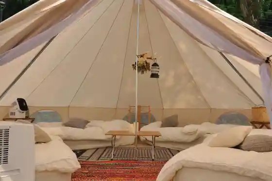
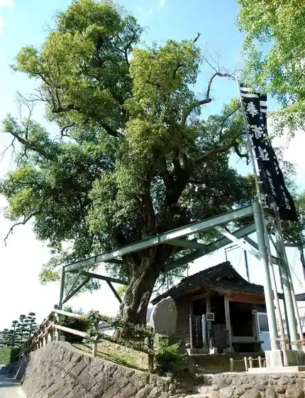
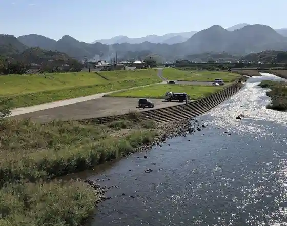
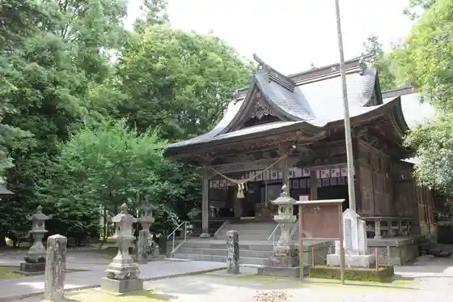

COMMON IDOE (Ido Ko Kyo Campground)
Kosa, Kumamoto · 096-282-8591 · Official / source link

Aso Hara Kinmokusei
Kosa, Kumamoto · 096-234-2447 · Official / source link

Naka Kabuto Hashi Green Park
Kosa, Kumamoto · 096-234-1154 · Official / source link

Tsushida Kasen Nature Park (Kumamotoken Kamimashiki Gun Kosa Oaza Tsushida Jinai)
Kosa, Kumamoto · 096-234-1154 · Official / source link
Kosa Shrine
Kosa, Kumamoto · 096-234-1111 · Official / source link

Kawadaira Campground
Kosa, Kumamoto · 096-234-2447 · Official / source link
Kosa Yana Ba
Kosa, Kumamoto · 096-234-0125 · Official / source link
Kosa Chokubai Tokoro Rokuji Kan
Kosa, Kumamoto · 096-234-2828 · Official / source link
Takada Seinikuten
Kosa, Kumamoto · 096-234-0057 · Official / source link
NIPPONIA Kosa Sosui no Sato
Kosa, Kumamoto · 096-234-8871 · Official / source link
trattoria SanVito (Torattoria Sanviito)
Kosa, Kumamoto · 096-285-1763 · Official / source link
Teuchi Soba Yanagi Ya
Kosa, Kumamoto · 096-234-0122 · Official / source link
Yama Boshi no Ki
Kosa, Kumamoto · 096-234-7335 · Official / source link
Jin no Nai Castle Ruins
Kosa, Kumamoto · Official / source link
COMMON IDOE
Kosa, Kumamoto · 096-282-8591 · Official / source link
Tsushida Kasen Nature Park (Kumamotoken Kamimashiki Gun Kosa Tsushida Jinai)
Kosa, Kumamoto · 096-234-1154 · Official / source link
trattoria San Vito
Kosa, Kumamoto · 096-285-1763 · Official / source link